sgsR-vignette
Tristan Goodbody
sgsR-vignette.RmdsgsR vignette
library(sgsR)
library(terra)
library(sf)
library(RColorBrewer)
library(dplyr)
library(tidyr)
library(ggplot2)
library(spatstat)
#--- import ALS metrics raster ---#
raster <- system.file("extdata","wall_metrics.tif", package = "sgsR")
mraster <- terra::rast(raster)
names(mraster) <- c("zmax","zmean","zsd","pzabove2","zq20","zq50","zq70","zq90","zq95")
#--- import forest inventory polygon and mask unwanted areas ---#
poly <- system.file("extdata","inventory_polygons.shp", package = "sgsR")
poly <- sf::st_read(poly)## Reading layer `inventory_polygons' from data source
## `C:\Users\tgood.stu\AppData\Local\Temp\RtmpA3NsZl\temp_libpath498826bb4c88\sgsR\extdata\inventory_polygons.shp'
## using driver `ESRI Shapefile'
## Simple feature collection with 632 features and 3 fields
## Geometry type: MULTIPOLYGON
## Dimension: XY
## Bounding box: xmin: 431100 ymin: 5337700 xmax: 438560 ymax: 5343240
## Projected CRS: UTM_Zone_17_Northern_Hemisphere
#--- import access layer to be used during sampling if desired ---#
roads <- system.file("extdata","roads.shp", package = "sgsR")
roads <- sf::st_read(roads)## Reading layer `roads' from data source
## `C:\Users\tgood.stu\AppData\Local\Temp\RtmpA3NsZl\temp_libpath498826bb4c88\sgsR\extdata\roads.shp'
## using driver `ESRI Shapefile'
## Simple feature collection with 167 features and 2 fields
## Geometry type: MULTILINESTRING
## Dimension: XY
## Bounding box: xmin: 431100 ymin: 5337700 xmax: 438560 ymax: 5343240
## Projected CRS: UTM_Zone_17_Northern_Hemisphere
#--- manipulate inventory polygon to mask out unwanted areas ---#
poly_subset <- poly[poly$POLYTYPE == "FOR" & poly$OWNER == 1, ]
poly_subset <- sf::st_union(poly_subset)
poly_subset <- terra::vect(poly_subset)
#--- mask input ALS raster using polygon layer ---#
wall_poly <- terra::mask(mraster,
poly_subset)
terra::plot(wall_poly[[1:2]])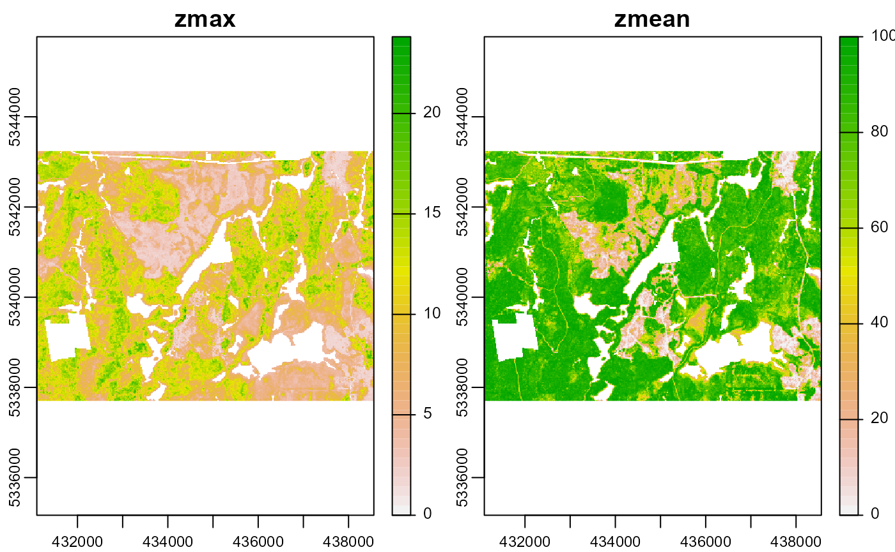
Stratification Methods
k-means stratification
#--- perform stratification using k-means ---#
kmeans <- strat_kmeans(mraster = wall_poly[[1:6]], nStrata = 10)## K-means being performed on 6 layers with 10 centers.
plot(kmeans)
#--- set 'details' = TRUE to get algorithm details and outputs ---#Optimum sample breaks
#--- perform stratification using OSB ---#
#--- note that this one can take a while ---#
osb <- strat_osb(mraster = wall_poly$pzabove2,
nStrata = 2,
nSamp = 10,
details = TRUE,
plot = TRUE)
osb$detailsSingle metric stratification
#--- perform stratification using user-defined breaks ---#
#--- define breaks for metric ---#
breaks <- c(seq(0,100,20))
breaks## [1] 0 20 40 60 80 100
#--- stratify on 1 metric only ---#
bk1 <- strat_breaks(mraster = wall_poly$zmean,
breaks = breaks,
details = TRUE,
plot = TRUE)

#--- perform stratification using user-defined breaks ---#
values <- terra::values(wall_poly$zmean)
#--- define breaks for metric ---#
breaks <- quantile(values, na.rm=TRUE)
breaks## 0% 25% 50% 75% 100%
## 0.0 62.1 83.2 91.6 100.0
#--- stratify on 1 metric only ---#
bk1 <- strat_breaks(mraster = wall_poly$zmean,
breaks = breaks,
details = TRUE,
plot = TRUE)

Dual metric stratification
## [1] 3 13 23
bk2 <- strat_breaks(mraster = wall_poly$zmean,
mraster2 = wall_poly$zq95,
breaks = breaks,
breaks2 = breaks2,
details = TRUE,
plot = TRUE)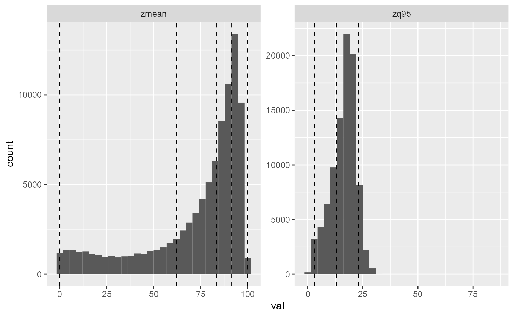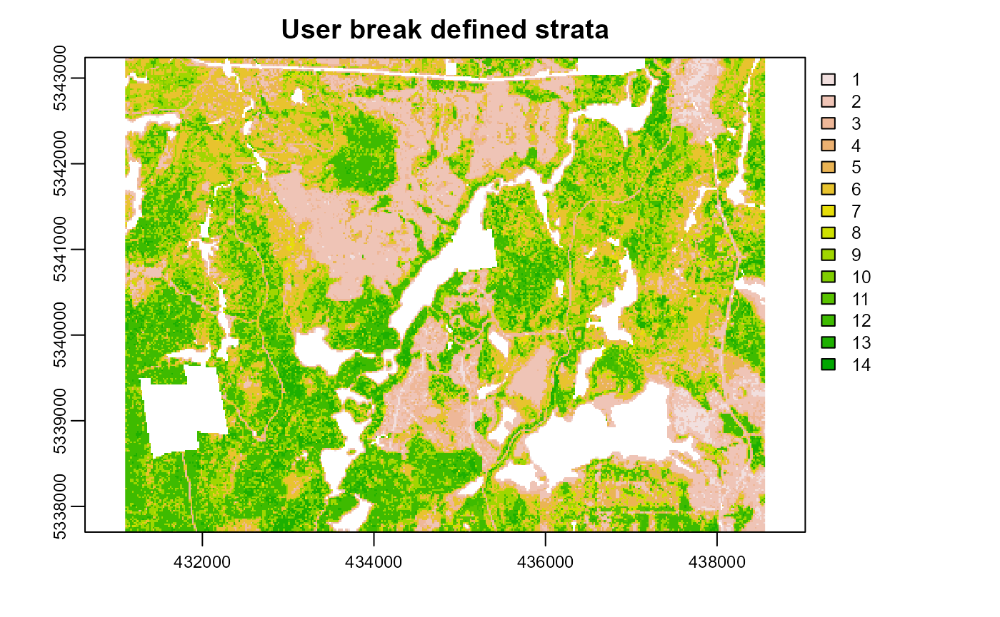
Principal components analysis
#--- perform stratification using principal components on P1 only ---#
pcomp1 <- strat_pcomp(mraster = wall_poly,
nStrata = 4,
plot = TRUE,
details = TRUE)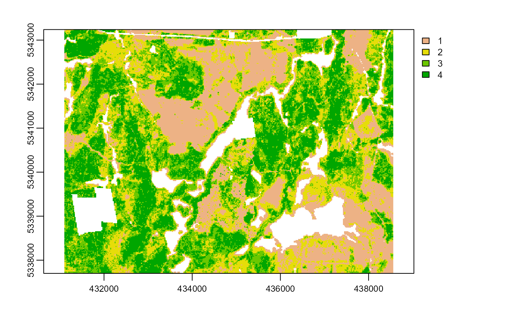
pcomp1 <- strat_pcomp(mraster = wall_poly,
nStrata = 4,
nStrata2 = 6,
plot = TRUE,
details = TRUE)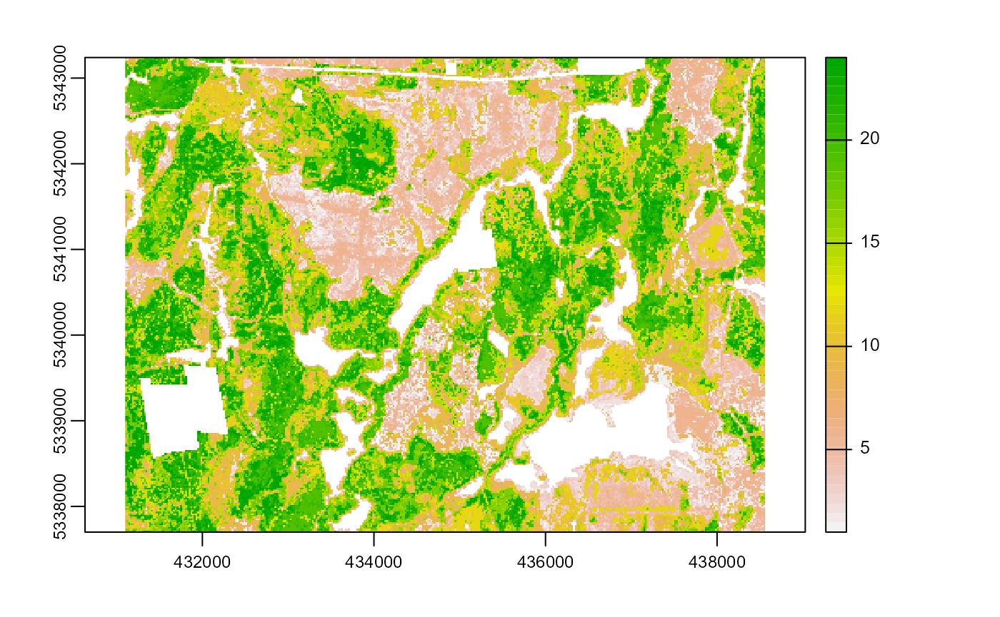
#--- perform stratification using principal components on P1 and P2 ---#
pcomp2 <- strat_pcomp(mraster = wall_poly,
nStrata = 10,
nStrata2 = 10)
#--- number of output strata will always be equal to ---#
#--- 'nstrata' * 'nstrata2' (if 'nstrata2' is provided) ---#
plot(pcomp2)
#--- set 'details' = TRUE to get algorithm details and outputs ---#Sampling
Simple random sampling (SRS)
#--- define desired stratification raster ---#
raster <- kmeans
#--- SRS **without** access defined---#
existing <- sample_srs(raster = raster,
n = 250,
plot = TRUE)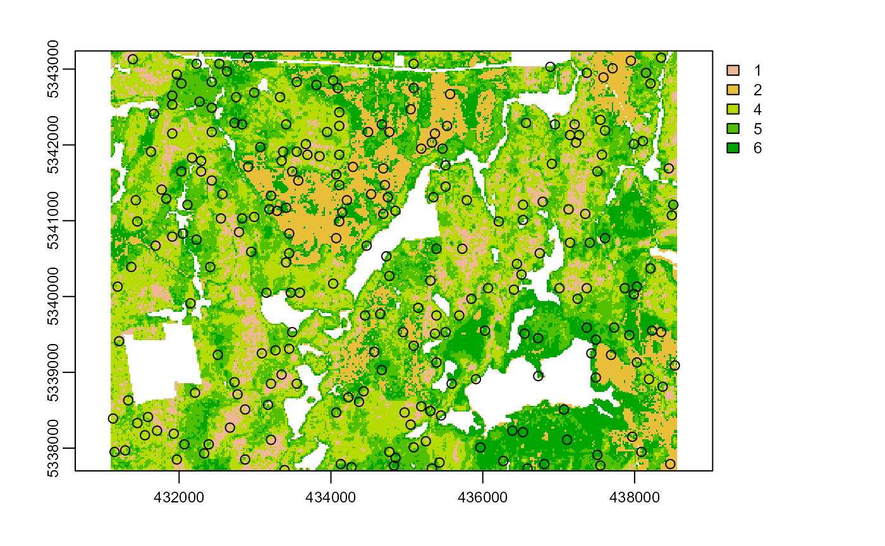
#--- increase desired samples and mindist parameter ---#
srs_md <- sample_srs(raster = raster,
nSamp = 300,
mindist = 300,
plot = TRUE)SRS with access defined
#--- sampling **with** access defined---#
#--- we want 200 samples with 200m min distance between each ---#
#--- we also provide an `access` polygon, which is linear road features ---#
#--- we specify we want an internal buffer ('buff_inner') of 50 ---#
#--- we also speficy we want an external buffer ('buff_outer') of 200 ---#
srs_w <- sample_srs(raster = raster,
n = 200,
mindist = 200,
access = roads,
buff_inner = 50,
buff_outer = 200,
plot = TRUE)## An access layer has been provided. An internal buffer of 50 m and an external buffer of 200 m have been applied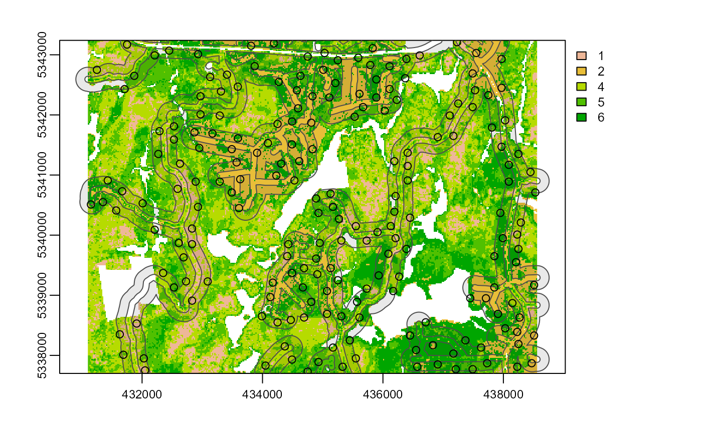
Stratified sampling
#--- stratified sampling **without** access defined---#
#--- 'mindist' between samples defaults to 0 ---#
strat_wo <- sample_strat(sraster = kmeans,
nSamp = 200,
plot = TRUE)## Implementing porportional allocation of samples## Processing strata : 1## Processing strata : 2## Processing strata : 4## Processing strata : 5## Processing strata : 6
#--- change mindist parameter ---#
strat_md <- sample_strat(sraster = kmeans,
nSamp = 362,
mindist = 200,
plot = TRUE)## Implementing porportional allocation of samples## Processing strata : 1## Processing strata : 2## Processing strata : 4## Processing strata : 5## Processing strata : 6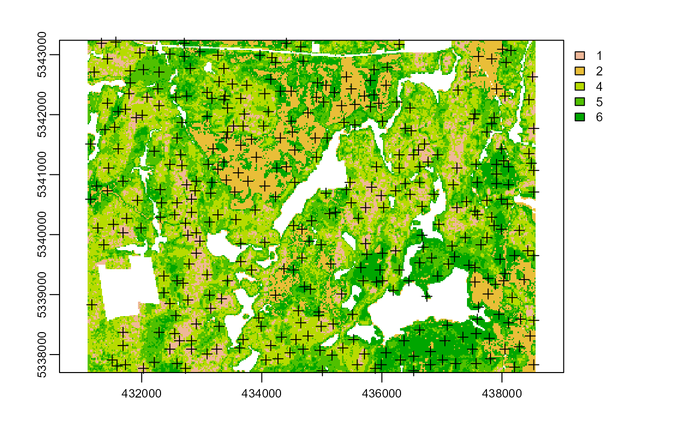
#--- stratified sampling with access and buffers provided ---#
strat_w_a <- sample_strat(sraster = kmeans,
nSamp = 200,
mindist = 200,
access = roads,
buff_inner = 50,
buff_outer = 200,
plot = TRUE)## Implementing porportional allocation of samples## An access layer has been provided. An internal buffer of 50 m and an external buffer of 200 m have been applied## Processing strata : 1## Buffered area contains 2668 available candidates. Sampling to reach 16 samples starting.## Processing strata : 2## Buffered area contains 6918 available candidates. Sampling to reach 25 samples starting.## Processing strata : 4## Buffered area contains 10281 available candidates. Sampling to reach 63 samples starting.## Processing strata : 5## Buffered area contains 9643 available candidates. Sampling to reach 57 samples starting.## Processing strata : 6## Buffered area contains 8728 available candidates. Sampling to reach 39 samples starting.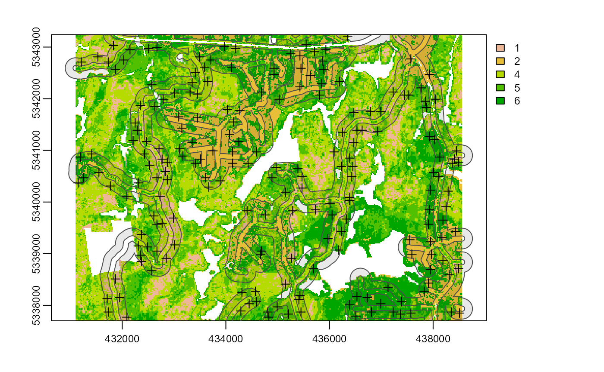
#--- optimal allocation ---#
sample_strat(sraster = kmeans,
nSamp = 200,
mindist = 200,
force = TRUE,
allocation = "optim",
mraster = mraster$zmean,
access = roads,
buff_inner = 170,
buff_outer = 264,
plot = TRUE)## Implementing optimal allocation of samples based on variability of 'zmean'## Forcing 200 total samples.## An access layer has been provided. An internal buffer of 170 m and an external buffer of 264 m have been applied## Processing strata : 1## Buffered area contains 1327 available candidates. Sampling to reach 8 samples starting.## Processing strata : 2## Buffered area contains 1711 available candidates. Sampling to reach 32 samples starting.## Processing strata : 4## Buffered area contains 6138 available candidates. Sampling to reach 43 samples starting.## Processing strata : 5## Buffered area contains 6341 available candidates. Sampling to reach 58 samples starting.## Processing strata : 6## Buffered area contains 3932 available candidates. Sampling to reach 59 samples starting.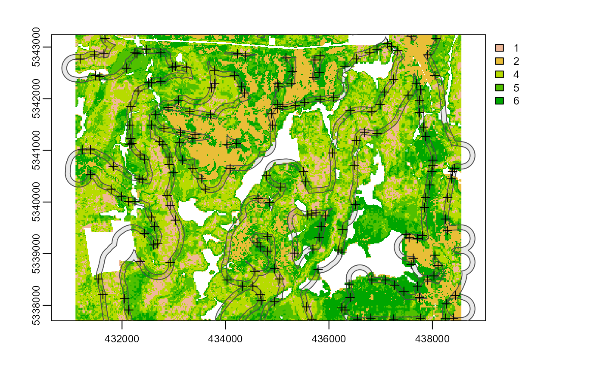
## Simple feature collection with 200 features and 3 fields
## Geometry type: POINT
## Dimension: XY
## Bounding box: xmin: 431190 ymin: 5337730 xmax: 438450 ymax: 5343210
## CRS: +proj=utm +zone=17 +ellps=GRS80 +towgs84=0,0,0,0,0,0,0 +units=m +no_defs
## First 10 features:
## strata type rule geometry
## x 1 new rule1 POINT (433790 5342290)
## x1 1 new rule1 POINT (431650 5342870)
## x2 1 new rule1 POINT (432930 5339930)
## x3 1 new rule1 POINT (435330 5339010)
## x4 1 new rule1 POINT (436690 5341350)
## x5 1 new rule1 POINT (432350 5338850)
## x6 1 new rule1 POINT (435750 5339790)
## x7 1 new rule1 POINT (433030 5339650)
## x32 2 new rule1 POINT (438410 5337750)
## x110 2 new rule1 POINT (435170 5342790)Balanced Sampling - uses metrics rasters
lpm2 method
#--- stratified sampling with access and buffers provided ---#
bal_wo <- sample_balanced(mraster = wall_poly,
n = 200,
algorithm = "lpm2",
plot = TRUE)
lpm2 with access provided
#--- stratified sampling with access and buffers provided ---#
bal_w_a <- sample_balanced(mraster = wall_poly,
n = 200,
algorithm = "lpm2",
access = roads,
buff_inner = 50,
buff_outer = 200,
plot = TRUE)
lcube algorithm - Slower
#--- stratified sampling with access and buffers provided ---#
bal_wo <- sample_balanced(mraster = wall_poly,
n = 200,
algorithm = "lcube",
plot = TRUE)
lcube with access provided - Slower
#--- stratified sampling with access and buffers provided ---#
bal_w_a <- sample_balanced(mraster = wall_poly,
n = 200,
algorithm = "lcube",
access = roads,
buff_inner = 50,
buff_outer = 200,
plot = TRUE)
lcubestratified algorithm
#--- need to add a variable named strata to enable stratified sampling ---#
mraster <- c(wall_poly,kmeans)
#--- stratified sampling with access and buffers provided ---#
bal_wo <- sample_balanced(mraster = mraster,
n = 200,
algorithm = "lcubestratified",
plot = TRUE)
lcubestratified - with access provided
#--- stratified sampling with access and buffers provided ---#
bal_w_a <- sample_balanced(mraster = mraster,
n = 200,
algorithm = "lcubestratified",
access = roads,
buff_inner = 50,
buff_outer = 200,
plot = TRUE)Incorporating existing sample networks
#--- extract strata from raster for already existing sample network ---#
#--- we use random samples defined above ---#
existing <- extract_strata(sraster = kmeans,
existing = existing)
#--- if 'data.frame = TRUE -- output will be a dataframe instead of an sf object ---#Stratified sampling in presense of existing plot networks
#--- sampling **with** access defined **and** existing samples defined ---#
#--- we want 200 samples with 200m min distance between each ---#
#--- we specify we have an existing plot network to include in our sampling ---#
#--- we also provide an `access` polygon, which is linear road features ---#
#--- we specify we want an internal buffer ('buff_inner') of 50 ---#
#--- we also specify we want an external buffer ('buff_outer') of 200 ---#
strat_w_e <- sample_strat(sraster = kmeans,
n = 200,
mindist = 200,
existing = existing,
access = roads,
buff_inner = 50,
buff_outer = 200,
plot = TRUE)## Implementing porportional allocation of samples## An access layer has been provided. An internal buffer of 50 m and an external buffer of 200 m have been applied## Processing strata : 1## Buffered area contains 2668 available candidates. Sampling to reach 16 samples starting.## Processing strata : 2## Buffered area contains 6918 available candidates. Sampling to reach 25 samples starting.## Processing strata : 4## Buffered area contains 10281 available candidates. Sampling to reach 63 samples starting.## Processing strata : 5## Buffered area contains 9643 available candidates. Sampling to reach 57 samples starting.## Processing strata : 6## Buffered area contains 8728 available candidates. Sampling to reach 39 samples starting.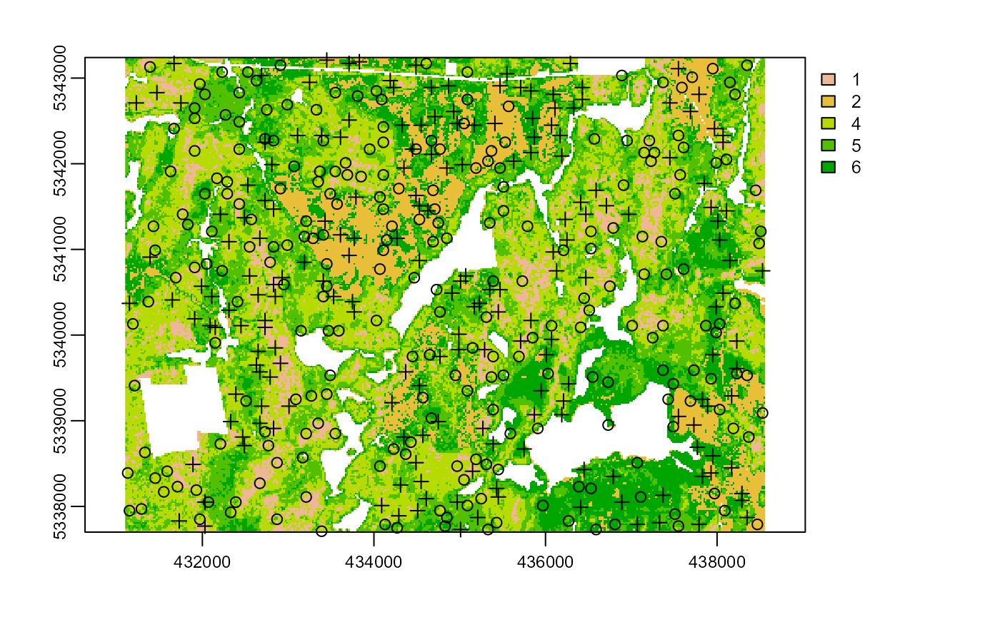
#--- red plots are existing and black are new ---#
#--- how many samples did we get total? ---#
strat_w_e## Simple feature collection with 450 features and 3 fields
## Geometry type: POINT
## Dimension: XY
## Bounding box: xmin: 431130 ymin: 5337710 xmax: 438530 ymax: 5343210
## CRS: +proj=utm +zone=17 +ellps=GRS80 +towgs84=0,0,0,0,0,0,0 +units=m +no_defs
## First 10 features:
## strata type rule geometry
## 17 1 existing existing POINT (437370 5340110)
## 36 1 existing existing POINT (432430 5341530)
## 53 1 existing existing POINT (432790 5340850)
## 66 1 existing existing POINT (435730 5340630)
## 75 1 existing existing POINT (433210 5338110)
## 80 1 existing existing POINT (437130 5341150)
## 87 1 existing existing POINT (436790 5341250)
## 117 1 existing existing POINT (432870 5338510)
## 123 1 existing existing POINT (433410 5340450)
## 149 1 existing existing POINT (437350 5341090)
#--- equal allocation ---#
o <- sample_strat(sraster = kmeans,
nSamp = 20,
mindist = 400,
existing = existing,
include = FALSE,
allocation = "equal",
force = TRUE,
plot = TRUE)## force == TRUE has no effect when allocation == 'equal'. Ignorning## Processing strata : 1## Processing strata : 2## Processing strata : 4## Processing strata : 5## Processing strata : 6Notice that we specified that we wanted 200 samples but we get 250. That’s because the existing samples were not included within the n parameter total. To include the existing samples within the context of their strata we can set include = TRUE and we will get the value of n we specify with all existing samples included.
#--- sampling **with** access defined **and** existing samples defined ---#
#--- we want 200 samples with 200m min distance between each ---#
#--- we specify we have an existing plot network to include in our sampling ---#
#--- we also provide an `access` polygon, which is linear road features ---#
#--- we specify we want an internal buffer ('buff_inner') of 50 ---#
#--- we also specify we want an external buffer ('buff_outer') of 200 ---#
strat_w_e_i <- sample_strat(sraster = kmeans,
n = 200,
mindist = 200,
existing = existing,
include = TRUE, #--- including our existing plots to reach 200 samples ---#
access = roads,
buff_inner = 50,
buff_outer = 200,
plot = TRUE)## 'existing' samples being included in 'nSamp' total## Implementing porportional allocation of samples## An access layer has been provided. An internal buffer of 50 m and an external buffer of 200 m have been applied## Processing strata : 1## 'include = TRUE' - Stratum 1 overrepresented - 2 samples removed.## Processing strata : 2## 'include = TRUE' - Stratum 2 overrepresented - 9 samples removed.## Processing strata : 4## 'include = TRUE' - Stratum 4 overrepresented - 24 samples removed.## Processing strata : 5## Strata : 5 required no sample additions. Keeping all existing samples.## Processing strata : 6## 'include = TRUE' - Stratum 6 overrepresented - 15 samples removed.
#--- how many samples did we get total? ---#
strat_w_e_i## Simple feature collection with 200 features and 3 fields
## Geometry type: POINT
## Dimension: XY
## Bounding box: xmin: 431150 ymin: 5337710 xmax: 438510 ymax: 5343170
## CRS: +proj=utm +zone=17 +ellps=GRS80 +towgs84=0,0,0,0,0,0,0 +units=m +no_defs
## First 10 features:
## strata type rule geometry
## 223 1 existing existing POINT (432670 5338270)
## 123 1 existing existing POINT (433410 5340450)
## 117 1 existing existing POINT (432870 5338510)
## 66 1 existing existing POINT (435730 5340630)
## 224 1 existing existing POINT (432550 5341030)
## 213 1 existing existing POINT (433450 5339310)
## 164 1 existing existing POINT (433690 5341870)
## 17 1 existing existing POINT (437370 5340110)
## 205 1 existing existing POINT (436750 5340570)
## 75 1 existing existing POINT (433210 5338110)Extract als metrics from samples for future modelling
#--- extract metrics from multi-band ALS raster for potential modeling ---#
metrics <- extract_metrics(mraster = wall_poly,
existing = strat_w_e_i)
metrics## Simple feature collection with 200 features and 12 fields
## Geometry type: POINT
## Dimension: XY
## Bounding box: xmin: 431150 ymin: 5337710 xmax: 438510 ymax: 5343170
## CRS: +proj=utm +zone=17 +ellps=GRS80 +towgs84=0,0,0,0,0,0,0 +units=m +no_defs
## First 10 features:
## strata type rule zmax zmean zsd pzabove2 zq20 zq50 zq70
## 1 1 existing existing 18.27 93.7 5.960000 8.290000 16.60 20.40 21.66
## 2 1 existing existing 15.35 94.0 4.430000 7.840000 12.15 16.63 18.12
## 3 1 existing existing 16.83 94.4 5.780000 9.929999 12.18 15.89 21.01
## 4 1 existing existing 15.24 96.9 4.230000 10.740000 13.30 15.64 17.14
## 5 1 existing existing 14.86 82.9 6.040000 2.730000 10.75 17.28 18.65
## 6 1 existing existing 15.69 92.4 6.480000 8.570000 10.30 13.72 20.29
## 7 1 existing existing 15.58 92.9 3.880000 11.780000 14.04 16.24 17.49
## 8 1 existing existing 16.01 84.9 4.680000 7.370000 14.41 17.50 18.69
## 9 1 existing existing 14.97 79.1 4.470000 8.500000 11.09 15.97 17.98
## 10 1 existing existing 19.66 81.9 8.679999 7.450000 10.91 24.23 26.91
## zq90 zq95 geometry
## 1 23.54 24.27 POINT (432670 5338270)
## 2 20.43 21.40 POINT (433410 5340450)
## 3 25.80 27.45 POINT (432870 5338510)
## 4 21.30 23.30 POINT (435730 5340630)
## 5 20.62 21.63 POINT (432550 5341030)
## 6 26.48 28.01 POINT (433450 5339310)
## 7 19.89 22.41 POINT (433690 5341870)
## 8 20.70 21.53 POINT (437370 5340110)
## 9 20.69 21.89 POINT (436750 5340570)
## 10 29.25 30.04 POINT (433210 5338110)
#--- if 'data.frame = TRUE -- output will be a dataframe instead of an sf object ---#